Note: this first chapter is quite long and wordy. I break down various aspects of the script system, Lua scripting and programming in general. This is to minimize the learning curve as much as possible, allowing everyone, even those without a programming background, to follow along. I also try to be “witty” with the reader and offer a bit of humor when appropriate. Successive chapters will progressively involve less hand-holding, as I will assume the readers are already familiar with what I am talking about after working through earlier examples. I did my best to ensure that whatever I am skipping over has been covered at least once, or even several times, beforehand.
Some more proficient Lua users might get annoyed at me stating the obvious too often or hammering on a point far beyond what’s necessary. I would ask of you to consider that these talkative explanations for the “obvious” things are not for an experienced veteran like yourself, but rather for beginners that have not yet programmed in any real scripting language and are just about to have their first experience doing so. Just skim past the sections which you feel are being too drawn out for your taste. Thank you for your patience!
Finally, we get into the good stuff. After all that boring (but important) theory of the plugin’s particle system and the mundane summary of the Lua language, we begin the practical part of the tutorial series, where I give example implementations of various particle effects and talk you through them, step by step. We will start slow with nothing especially fancy, but as we build up our knowledge, we will be capable of making some really mind-blowing things soon enough, I promise!
The way you create effects with scripting in this plugin is “low level” in some sense, because you start from creating a single particle instance, changing that particle’s properties to your liking, then spawn several of those particles with the specified set of properties, until all of them assemble into an elaborate effect, like a fire with embers and smoke or an explosion with a shockwave. A consequence of this is so-called boilerplate code (meaning mundane, repetitive code) every time you want to make a particle effect. However, as a result of this, what you get in the end is extremely customizable, to a degree never yet seen in TRLE building. Plus, once you write an effect in Lua, it becomes a module which can then be reused as many times as you like. This first chapter very briefly shows the process of creating a module script, then importing it into the level script. A more elaborate explanation of the module system and its intricacies will be given in a later chapter.
The tutorials (as you will see for yourself) will take the form of doing something with a naïve or an intuitive-but-wrong approach, with me explaining why it’s wrong or how to improve it, and then improving it in the next iteration. There can be several of these iterations, but near the end of each section, I usually will leave the complete, working code for the final iteration. My one request is that you don’t go directly for this final code with your friends ‘copy’ and ‘paste’, but actually work through the examples, studying the explanations and only then comparing what you have with the final code as reference (…please? I worked really hard on making these tutorials!)
I will gradually introduce new features and functions as we need them, instead of dumping this information on you all at once with no rhyme or reason. In doing so, I will sometimes take short tangents from the topic at hand, to explain how these features work in general and offer more insight on them. Such rambling may be perceived as somewhat chaotic, but there are simply so many different aspects to touch on that it’s nearly impossible to present this information in a completely linear fashion, unless you want to read through dozens of boring lectures before we actually get to the main point.
As this chapter is meant to help you take your first steps in particle scripting, it will show how to recreate an effect that could also be more or less achieved with FLEP custom smoke emitter OCBs, given that many TRLE builders have already used them before. Hence, for our very first particle effect, we will make a very simple, sprite-based volumetric dust effect, to be placed in a room or (later) to spawn around Lara herself wherever she goes. Such an effect will not involve any complex programming prowess and experience, at least not in its most basic form.
Let’s ask ourselves the following question: what would we need to create a dust effect? Well, we could spawn sprite particles with a dust-like sprite texture at random positions. They will float about for a brief moment before disappearing. For now, let’s assume that the particles will not do anything else after being spawned, just float around idly for a few seconds and then vanish. This is precisely a job for init functions, which as you may recall, initialize a particle with its properties.
Seems rather simple in concept, right? Let’s get at it with the coding, then!
If you remember what I wrote in the introduction about the scripting interfaces, you are aware of the existence of level scripts and module scripts. I have not explained how any of that works yet, though, so here it goes!
Level scripts are Lua files, which are contained in the special levelscripts folder. These files are linked to particular levels via the Customize= CUST_LEVEL_SCRIPTS TRNG script command. CUST_LEVEL_SCRIPTS is a constant added by the Particle System plugin, which facilitates the inclusion of Lua script files for a single TRLE level. As such, this script command is individual for each [Level] section (or in the case of the Title level, [Title] section) in script.txt.
Level scripts files, in order to be linked up by CUST_LEVEL_SCRIPTS, must have the filenames, without their .lua extensions, added as ExtraNG strings. For example, if you have a level script file called temple.lua, you must add an ExtraNG string in Customize= CUST_LEVEL_SCRIPTS, temple (no spaces before or after the word), e.g. in TombIDE’s ExtraNG string layout we should see something like:
ID
Hex
[ExtraNG]
1
$001
Plugin_ParticleSystem
2
$002
temple
We see that the temple entry is added as an ExtraNG string with ID = 2. We can then reference this ID in the given [Level] script section, by using CUST_LEVEL_SCRIPTS, typing the string’s unique ID number:
Customize= CUST_LEVEL_SCRIPTS, 2
We can have more than one level script per level – we just have to add more ExtraNG string entries for the corresponding level script files and list their IDs in the CUST_ command.
When a level is loaded by the game (this includes the title level), the plugin checks if the CUST_LEVEL_SCRIPTS command is used, and attempts to load files from levelscripts, that are referenced by their ExtraNG string IDs. If the plugin does not find a Lua file matching the name in the string, it’s not a tragedy, the game will still run as normal (unless script integrity is enabled, we will touch on this much later). Also, we do not have to use the CUST_LEVEL_SCRIPTS command at all, if we are sure that the level should not use any custom effects.
Creating a level script file
Depending on whether you created your TRLE project the old-fashioned way or the TombIDE way, your project’s layout will be different. In the old method, the working directory hosts the main tomb4.exe file, alongside some game assets. On top of that, there are subfolders such as audio, which stores the music and ambience tracks, and data, which contains, amongst other things, .tr4 level files. To run the game, you run tomb4.exe directly. In a project managed by TombIDE, there is an Engine folder, which in turn hosts the aforementioned tomb4.exe, assets and subfolders, including data. To run the game, you run the PLAY.exe in the parent directory, instead of tomb4.exe in the Engine folder. It crucial to understand which system you are using, to be aware of the exact location of these runtime files.
All level script files must be hosted in a subfolder with a fitting name, levelscripts. Chances are, you will not be able to find such a folder, because it doesn’t exist yet and you must create it first. If you are using TombIDE, the location for this new folder should be inside the Engine folder (where you also find the data, audio folders and tomb4.exe). Otherwise, you create it in the main folder of your TRLE project.
Once the levelscripts folder is added, we are ready for the next steps.
Let’s go inside the levelscripts folder and create a new, empty Lua script file. You can do this either by creating an empty text file in Notepad and changing the extension to .lua afterwards, or directly saving an empty file with the .lua (Lua source file) extension in Notepad++ (this is the recommended way). Note that in Notepad++, you must include the extension as part of the file name, the Lua Source file option selected in the dropdown is not enough to guarantee the proper extension is added.
We can give our new .lua file the same name as the .tr4 level file it will be paired with (and in which we want to use our scripted effects). This is not a requirement, though. Other names are also permitted, because we will be adding the name to ExtraNG strings anyway. I will be using my particles in the tut1.tr4 level, therefore I’ll name it tut1.lua. Having named it like that, I must add an ExtraNG string: tut1. For me, this string ended up with ID = 5. Now, in the [Level] section for Tut1 (Playable Tutorial Level), I add the script line:
Customize= CUST_LEVEL_SCRIPTS, 5
And this should link the level to the ExtraNG string with ID = 5, which is tut1, which in turn references tut1.lua inside the levelscripts folder.
Whew, all clear? Great, we now have the level script linked to our level. Now, we need a module to import into it!
Creating a module script
Referring again to the section on scripting interfaces, modules are stored in a special subfolder called effects. This folder likely does not exist either, so you must create it first as well. Navigate to the working directory of your TRLE project, where you find the tomb4.exe. Here, create a new folder called effects or Effects (lower/upper case is irrelevant but the spelling must be exact). Go into that folder and repeat the process of creating a lua file, as described above. When it comes to naming module files, you are free to name them however you prefer, respecting the general rules to naming files in the operating system. However, a good idea is to use a name that immediately informs of the module’s intended effect or purpose. Since we intend to make a dust effect, an obvious choice is dust.lua, but you may go with something else, of course.
The effects folder can hold countless module files, meaning you can create as many module scripts as desired (“the sky is the limit”).
Linking the module script to the level script
Now that we have an existing module script file, for it to show up in our level, we must import the module in the level script.
Reopen the level script file in the levelscripts folder (for me, this is tut1.lua). Here, you have to use a special, built-in import function, require(). This function belongs to the plugin’s API and its purpose is to import a requested module in a level script (one way to picture it is that the level requires the specified module from effects, requesting it via the function).
Remembering what was said about functions, you know they often may need arguments. The require() function expects a single argument, the name of the module to be imported.
I have to explain now what the name of the module is. Simply put, it is the name of the module script file, but without the extension (similar to the name of the level script file, added as an ExtraNG string). If we named our module script file dust.lua, the name of the module is dust, nothing more than that. Can we not use the full name with the file extension? No, we cannot. This is because Lua scripts come in two “flavors”, a text version and a binary version. It will become apparent what the difference is, how the text version can converted to the binary version and why you would want to do that when the time comes. For now, we only need to know that they will have different file extensions and using the module name without the extension allows for either of them to work interchangeably.
Therefore, for require(), the plugin anticipates the module file name, minus the extension. Taking this into account, how should we use require(), then? Perhaps your first idea might be to do this:
require(dust)
Unfortunately, this won’t work as expected. We’re working in a .lua file now, which means inside this file, the rules of Lua syntax apply. One of the rules of this syntax is, if a word is not one of the reserved keywords, it is implied to be a name of a variable. The problem with that is there’s no variable named dust yet. Consequently, the plugin will abort the require(dust) instruction, not knowing what dust is supposed to mean in this context.
What we actually want to do is put dust in single or double quotes, making it a string. Lua’s string data type is for storing text data, an example of which could be the name of something. Such as the name of a module. Strings are set apart from ordinary code by putting them inside single ' ' or double " " quotes. If we write one of the following lines:
require('dust')
or
require("dust")
The plugin will be happy with this and import the module dust. Of course, this is under the assumption that a module with that name indeed exists in effects and said module contains no syntax errors. Make note of the fact that there must be no leading or trailing white spaces in the string, the quotes must be tightly wrapped around the name.
Using one of the above code lines, we have successfully linked the dust.lua module to the level script, meaning we will be able to observe result of our efforts inside the level. Make sure you saved the level script file, though!
Side note: if for whatever reason you want to disable some imported module, you can simply comment it out, like so:
--require("dust")
Alright, we have a module script correctly linked to a level script. After saving the changes, we can safely close the level script file. We will now go back to module script file in effects (e.g. dust.lua) again, which is the file we will work with for the rest of this page.
local dustgroup -- declaration of our particle group variable
As you see, there is no value being assigned to the variable dustgroup. I know it looks weird, but I’ll justify it soon. Just bear with me for now.
After this declaration, the name dustgroup becomes a recognized variable name to the script underneath it. We must type this local specification in front of the variable (remember, the plugin forces us to use local variables only). While a proper value will be assigned to it later in the script, Lua enforces the upfront mentioning of dustgroup as a local variable. I know it probably seems confusing without assigning any value to the variable, but you will get used to it as you write more scripts. Think of it as telling Lua – I will be creating a new particle group with this dustgroup name soon, I’m letting you know in advance.
Init and update functions
A particle group’s most important properties are an init function and update function. As a reminder, the init function tells the plugin how to spawn and set up particles of the group. The update function tells it what to do with the particles after they are spawned.
For this topic, recall how to write a function in Lua. We can start writing our init function in the script, below the dust group variable. A suitable init function is one that does not take any arguments and does not return any values, either. Don’t forget the local keyword in front, since functions, just like variables, must be declared as local.
We can start with something like this:
local dustgroup -- declaration of our particle group variable
local function dustInit() end
For now this init function is empty, since it is immediately followed by the end keyword with no instructions in the body. But don’t worry, we will be filling it out very soon.
Regarding how you should name your our function, it’s entirely up to you to decide. My personal suggestion for a function naming scheme is to combine the name of the effect the function will belong to with the type of the function (examples could be dustInit or dust_init for the init of dust particles, dustUpdate or dust_update for the update of dust particles). Adopting this convention will help you keep track of what each function is responsible for when your particle scripts become long and complex. But it’s merely a suggestion, you may use whatever naming convention you wish.
While we’re at it, we can also create our update function stub.
The update function takes only one argument, the particle instance it will be updating. Within this tutorial series we always name this argument part as a convention, but in reality it can be any name that’s valid in Lua, including p , myPart or xZvDf42_517. It’s not important which name you use, as long as it will be meaningful to you and potentially to someone else who might read the script you wrote (so perhaps xZvDf42_517 is not that good of a name, after giving it more consideration). Additionally, you should be cautious when using a name that was already used before for something else in the script (there are specific rules to when this is okay and when it isn’t, which we’ll get into at some point). If two identical names are conflating, such incidents are called name collisions and can lead to script errors or you overwritting something down the line (bear in mind how easy it is to overwrite variables).
Anyway, here are both of our functions defined:
local dustgroup -- declaration of our particle group variable
local function dustInit()
end
local function dustUpdate(part)
end
It would seem that we have everything important needed in the particle group definition. Let’s define it now!
Creating the particle group
To create a new particle group that will use our init and update functions, we will call a built-in plugin API function, createGroup(). This function instructs the particle system to create a new particle group for us. The function takes two arguments, the first argument is the name of the init function, the second is the name of the update function. The function returns a particle group data object, which we can assign to a variable (in our case, the variable dustgroup). Below our own init and update functions, we add the line:
local dustgroup -- declaration of our particle group variable
local function dustInit()
end
local function dustUpdate(part)
end
-- creation of our particle group and assigning it to the variable
dustgroup = createGroup(dustInit, dustUpdate)
And we’re done, we’ve successfully created our first particle group and stored it in the dustgroup variable! Note that since the function names treated like variables, we did not use any quotes here.
The init and update functions have been defined and linked to the particle group, but… neither of them are really doing anything. Their bodies (i.e. their sets of instructions) are empty! Rest assured, it’s fine to give empty functions like this to a group, there’s nothing wrong with doing such a thing. But since we are starting simple and won’t really need an update function for our dust particles (for now, at least), we can go a step further – we don’t even need to specify any update function in createGroup(), either.
Yes, I’ve tricked you! Functions are in fact entirely optional for particle groups. You can even create particle groups without specifying an update OR init function for them (why you would ever want to do this will be explained in due time).
To indicate that we are not specifying a function in createGroup(), we pass the special Lua value nil in its place. This effectively tells createGroup() – “we don’t want to use an (init / update) function for this particle group” (in this context it’s similar to IGNORE or -1 in TRNG scripts).
What about our actual dustUpdate() function that we’ve worked very hard on, though? What if we comment it out for now, with the multi-line comment. This way we don’t get rid of it completely, in case we want to have one later (hint hint, we will, in Chapter 2). Our script should now look something like this:
local dustgroup -- declaration of our particle group variable
local function dustInit()
end
--[[
local function dustUpdate(part)
end
--]]
-- creation of our particle group and assigning it to the variable
dustgroup = createGroup(dustInit, nil) -- passing nil in place of our dustUpdate
Again, you can also keep using an empty function in the group definition if you prefer, it effectively leads to the same outcome. But I think there is no need for creating a function that does nothing just for the sake of it, when it’s not even required. Hence I prefer to pass nil for these unwanted functions instead. It involves less typing, which is great for me, since I’m lazy.
After seeing the above snippets of code, you may be thinking that the syntax of declaring a local group variable at the top of the script, then assigning the group given by createGroup() in a separate line, at the bottom of the script, looks very strange. Couldn’t we have immediately done the following in the first line of the script, instead?
local dustgroup = createGroup(dustInit, dustUpdate)
Well, unfortunately not. Lua scripts are parsed from the top towards the bottom. In the above snippet of code, Lua encounters some names it has not seen yet (dustInit and dustUpdate inside the call to createGroup()). When a Lua encounters a name that has not been defined, it assumes we’re referring to a global variable. The thing is… we’ve established we can’t use global variables, only local variables are allowed for particle scripts! Needless to say, Lua will not be happy with this, the above code will be aborted.
This is not the only problem we are facing by attempting to take a shortcut. Perhaps we can try being clever and declare our two function variables as local at the very top (remember, function names are simply disguised variables) and provide their definitions later. Unfortunately for us, all uninitialized (unassigned) variables in Lua, no matter if global or local, implicitly hold the special value nil. This has very significant implications. Examine the code snippet below:
local dustInit, dustUpdate -- both variables have nil as an implicit value here
-- therefore, if we pass them to createGroup()
local dustgroup = createGroup(dustInit, dustUpdate) -- we are currently passing (nil, nil)!
-- assigning functions to the variables won't fix this
dustInit = function() -- function code
end
dustUpdate = function(part) -- function code
end
-- now the variables indeed have a "function" value, but it's too late, createGroup() was already called with nil values!
Remember, I explained that Lua reads code top to bottom. It does not matter if we ultimately provided function definitions to dustInit and dustUpdate below. What matters is at the time of calling createGroup(), both dustInit and dustUpdate were implicitly holding nil, so createGroup(dustInit, dustUpdate) in fact just became createGroup(nil, nil)! Defining dustInit and dustUpdate as functions later (after already using createGroup()) does not remedy this. The result is a group with no init or update, unable to spawn any particles. As you see, we’ve only succeeded in making things worse for ourselves.
This is the ultimate reason why particle group creation is structured the strange way it is. We need the group variable dustgroup to be declared local, since all variables must be local. However, we cannot call createGroup() to assign a value to it yet, because the init, update functions are yet to be defined as such. Only once we defined the needed functions, we can ultimately call createGroup(init, update) and assign the result to the group variable. The rule to always follow is to place the local group variable declaration and the function definitions above the call to the createGroup() function (otherwise you’re inviting severe syntax problems, as demonstrated above).
While we may not need an update function for our group, we most certainly will need a suitable init function – how else will we get the dust particles to spawn, after all?
Init functions, unlike update functions, ask for no arguments. If we recall the purpose of the init function, it is to create a particle and initialize its properties, like position, sprite texture, size and color. The init function does not return any values (while it can technically return them, it serves no purpose here, the returned values will simply be discarded).
By the way, from this point onward, I will not display the whole script in each snippet, but only the sections relevant to what is being discussed at the moment. I will expect you to be aware that all the other bits of the script from the previous examples are still there (“object permanence”), they are only omitted for clarity and brevity. Since we’ll be focusing on the dustInit() function for a while, the several upcoming snippets will include only that function.
Let’s begin with creating a new sprite-type particle. This is accomplished through another API function, createSpritePart(). It returns a single blank-slate particle instance of a given particle group. It’s then our job to initialize the particle’s properties one by one. The function takes a single argument, the particle group variable. In our case, this is the variable dustgroup, since we want to create a particle instance of that group (and it’s the only group we have right now, anyway…). The call to the function could look like this:
createSpritePart(dustgroup) -- create a sprite particle of the "dust" group
but it will do no good. This results in us losing the newly made particle, leaving us unable to access it (our particle “escapes”). Therefore, we must capture the particle instance returned by createSpritePart(dustgroup), by assigning it to a local variable (putting it on a leash with a name tag).
The name for the variable could be anything you see fit, as long as it respects the general naming rules. That being said, we will establish a convention in these tutorials – we always name this variable part to know that we are speaking of the particle instance of the group specified inside the createSpritePart() function call.
To sum up, in the body of dustInit(), we write the following:
local function dustInit()
local part = createSpritePart(dustgroup) -- create a sprite particle of the "dust" group
end
Apologies in advance for the upcoming tangent, but I feel I have to clear something up about this syntax.
If you are attentive, you may be thinking that createSpritePart(dustgroup) line above should result in createSpritePart(nil), seemingly going against what I said about code order. That would be because the dustgroup = createGroup(dustInit, dustUpdate) line occurs after the part = createSpritePart(dustgroup) line in the script. At our current level of understanding, it is logical to make that assumption. In actuality though, the plugin defers calling our init function until the level script and all modules are fully loaded and the main game loop is started. At that point, our dustgroup variable will genuinely hold the particle group, rather than nil. This will become obvious once we discover more of the plugin’s inner workings at some point, such as the different script phases that exist. For now, you just have to take my word for it. Anyway, tangent over.
As you might remember, the init function is called once on each game tick. We do genuinely create new particles with the above init function, once a frame! However, if we were to run the level now, we wouldn’t see anything happening. This is because the particle instance was left uninitialized. The plugin only hands us a blank sheet of paper with the particle, initializing (drawing something on it) is our job. Most of the particle’s properties start out with the value 0. For one, such a particle has size 0, so it’s invisible. And since its life is also 0, it’s already dead before it ever gets drawn on screen. And its position vector is at the coordinates (X: 0, Y: 0, Z: 0) which is most likely outside of your level map, so we wouldn’t be able to see it, even if you ignore all the previous reasons.
Let’s fix all of that. We’ll now recall the final section of the Lua Crash Course, when we talked about accessing a variable’s fields with the dot operator. We have a newly created particle instance, that we have assigned to the local variable part inside the dustInit() function. This particle instance is one example of the so-called plugin data, which are like tables, except their contents is predetermined. Through part, we can access the various fields (or properties) of the particle. We can reach these fields with the dot syntax.
Let’s address the particle’s life properties first. The particle fields we want to look at are called part.lifeSpan and part.lifeCounter (note: these names are case sensitive and written in camelCase ).
As a reminder from the section on particles in the Introduction chapter, the lifeSpan property describes the total amount of life a particle has. Once set, this value should not be changed e.g. in the update function (while it is not strictly forbidded, you shouldn’t do it, because you might break your particles). The lifeCounter property, on the other hand, is what keeps track of how much life the particle has left. On each game tick, the particle system decreases the lifeCounter of each existing particle by 1. Once it reaches 0, the particle dies, meaning that it stops being drawn and updated (and it no longer exists to the script).
Say we want to have our dust particles live for 4 seconds before they vanish. The values for part.lifeSpan are expressed in the number of game ticks (frames). Since in the classic TR engines there are 30 frames to a second (a locked framerate of 30 fps), we just need to do a straightforward multiplication, 30 * 4. Multiplying numbers is hard work though… I know! Let’s have Lua carry out this difficult calculation for us, how about that?
local function dustInit()
local part = createSpritePart(dustgroup) -- create a sprite particle of the "dust" group
As you can see, we used the dot syntax to access the part.lifeSpan field of the part variable (holding our newly produced particle instance). To this field we assigned the result of the expression 30 * 4, which happens to be 120.
Still with me? Well, you better be!
What about the part.lifeCounter field, aren’t we forgetting it by any chance? We could easily add this next line below:
This is correct and it works. But I’ll let you in on a little secret – when we set the part.lifeSpan field, the plugin will automatically set part.lifeCounter with the same value! We therefore don’t really need to set it explicitly like in the above example, even though it’s completely fine to do it that way if we please. It’s up to you, both approaches work. Since I’m lazy, I’m glad with avoiding unnecessary typing.
Maximum particle lifetime
Out of curiosity, how long do you think a particle from the particle system can live? Well, lifeSpan and lifeCounter can hold an integer between 0 and 32767. If we take the maximum value and divide it by 30, we get the number of seconds:
32767 / 30 = 1092.333333…
and if we convert that to minutes…
1092 / 60 = 18.2
…we see that we get a bit over 18 minutes! For comparison, FLEP allowed a max of about 8.5 seconds (255 / 30).
That just about covers both lifeSpan and lifeCounter. We’ll move onto the particle size, now.
The size property is a bit convoluted, so we must focus now.
Sprite squares
The size of a sprite particle means the size (in game units) of a square with equal width and height in the TRLE world. This means that if we have a particle of size 1024, this will result in a 1024 x 1024 square. The sprite texture on it will look the same size as if you were to apply the sprite texture to a 4 click by 4 click square on a wall, when viewed front and center. A size of 256 will likewise result in a 256x256 square, equivalent to a hypothetical square of 1 click by 1 click in size, when viewed face front. Below is an image conveying what I mean, if my explanation isn’t clear enough.
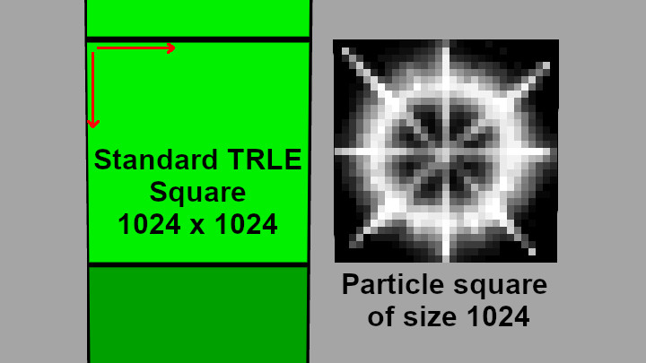
Why all this sudden talk of some abstract squares, though? Well, it’s because with sprite particles, the sprite texture is mapped onto such squares, which always face the camera.
The apparent size of the particle will depend on which parts of the sprite’s texture are visible and which are transparent. If you have a tiny 4x4 white dot in the middle of an otherwise black or magenta 128x128 sprite texture, it will also be visible as a relatively tiny dot in game, even if the size would indicate otherwise. Hence you cannot make a general statement about how big a particle will appear with a given size, as it will greatly depend on the sprite texture itself. Objectively, it is only possible to describe the size of the square onto which the sprite texture is mapped.
You must arrive at the right size to use through trial and error sometimes, unless you standardize your sprite textures somehow. Be aware that whenever I refer to particle size within the whole tutorial series, what I actually mean is this particle square size. But for brevity, I will always say particle size, actually meaning the square size from here on out.
Also worth noting, the resolution of the used sprite texture does not affect the size of the square. A 16x16 texture and 128x128 texture, assuming they come from the exact same rescaled texture, will appear the same size on the squares. Only the texture resolution is affected, so the 16x16 can look more blurry, while the 128x128 texture will be more sharp in comparison (or more pixelated vs. more high-res if you have bilinear filtering disabled).
The three size fields
That’s the theory, but what do we actually put in the init function? There is not one single size property to a sprite particle, but three in total. These are part.sizeStart, part.sizeEnd and part.sizeCust.
part.sizeStart is the starting/initial particle size. As a particle lives through its lifetime, it will linearly transition to sizeEnd.
part.sizeEnd is the ending/final particle size, when the particle reaches its end. If we set sizeEnd equal to sizeStart, naturally the particle should remain a constant size throughout its whole existence. Otherwise, it will linearly grow or shrink with time.
part.sizeCust is a field used exclusively in update functions. It overrides whatever is the current size to a custom value. Setting it inside init functions serves no purpose, so we will ignore it for now.
Let’s try giving the particles a sizeStart of 150 and the same sizeEnd. We can always adjust them later, if we decide that it’s too small or too big of a size:
local function dustInit()
local part = createSpritePart(dustgroup) -- create a sprite particle of "dust" group
The second version can be very useful if the value set for part.sizeStart is not a known in advance constant value, but a result of some calculation or function. If we would like to use the exact same value for both (i.e. make the particle size constant throughout its life), we can accomplish that with this approach (we are simply copying the value from one field to the other).
If you ever worked with any graphics on a computer (even in MS Paint), you perhaps know that many electronic devices, computers too, understand color as a combination of 3 primary colors: Red, Green and Blue. In the case of 24-bit color depth, for each of the three color channels (R, G, B) we can assign a value between 0 and 255, telling the computer how much of each primary color to add to the final color. With this, you can create nearly any color you can think of. By convention, 0 means no color for that channel, while 255 means the maximum amount of color for that channel. From this, we can conclude that an RGB of (0, 0, 0) would be pitch-black. On the opposite end of the spectrum, an RGB value of (255, 255, 255) would be completely white. In between is almost every other color visible to the human eye.
If you need to refresh your memory on how this works, you can play around with the sliders below to see how values in RGB channels map to specific colors:
How do we translate this knowledge to particles? Sprite particles have 3 color fields:
part.colStart
part.colEnd
part.colCust
These 3 fields work by analogy to part.sizeStart, part.sizeEnd and part.sizeCust, meaning that particles begin their life with colStart, transition towards colEnd, while colCust can override the color in update functions.
These color fields are a structured data type called ColorRGB, further comprised of three components or sub-fields: r (for red), g (for green) and b (for blue). Each of the components can hold integer values between 0 and 255. To access the components of ColorRGB, such as part.colStart, we do the following:
part.colStart.r -- amount of red 0-255
part.colStart.g -- amount of green 0-255
part.colStart.b -- amount of blue 0-255
and by analogy we do the same for the part.colEnd and part.colCust fields. We will encounter a similar nested structure with position and velocity fields soon, so you should familiarize yourself with this sequential dot syntax to access the inner components of a structured field.
Anyway, what kind of color should we use? To be honest, this is a completely subjective matter and there is no right or wrong here. Choose a color that you personally feel looks right. This is further complicated by the fact that the intensity of the color will depend on the sprite texture itself. With standard black-and-white sprite textures, the color will be less intense for pixels that are closer to black and more intense for pixels closer to white. With the exact same color values, the pixels with a medium grey color will appear fainter than pixels with a bright white. Along with size, color is another property which needs some trial-and-error, depending strongly on the sprite texture itself (we are not even getting into the topic of various blending modes, which too affect the actual color, we’ll discuss that later on).
Ways of specifying colors
Since we want to make dust, I came up with this as a rather “dusty” color: RGB (150, 120, 85) . But of course, you can go with something completely different, it’s your effect! Let’s give the particle our chosen RGB color values:
local function dustInit()
local part = createSpritePart(dustgroup) -- create a sprite particle of the "dust" group
part.colStart.r = 150
part.colStart.g = 120
part.colStart.b = 85
end
This method of specifying each color field one-by-one is perfectly valid. But I will let you in on another secret: we can use an API function that will form our desired color in just one single line of code, passing the color values to it: createColor(r, g, b). Using this function, we can achieve the exact same thing as above, by assigning the returned result of createColor(r, g, b) directly to part.colStart, like so:
local function dustInit()
local part = createSpritePart(dustgroup) -- create a sprite particle of the "dust" group
Which do you prefer? The former method is more verbose and explicitly states what value is assigned to each color channel. The latter is more concise, with a bit less typing. Use whichever you feel more comfortable with and makes sense to you, it’s all the same.
By analogy to part.sizeEnd, part.colEnd will be the final color of the particle at the end of its life. For now, let’s keep it simple and have it be the same color as part.colStart. Instead of setting the RGB values individually this time (although we could do that), we can opt to copy the exact same color from part.colStart to part.colEnd, in a single line of code, like so:
local function dustInit()
local part = createSpritePart(dustgroup) -- create a sprite particle of the "dust" group
part.colStart.r = 150
part.colStart.g = 120
part.colStart.b = 85
part.colEnd = part.colStart -- copy colStart color to colEnd
end
The following thoughts might have crossed your mind – What if I gave my particles a very dark color, near-black or pure black? And what would happen if no color was assigned to the particle at all?
Good question. Such particles would appear invisible or near-invisible in game. This is because by default, sprite particles use the color-additive blending mode (meaning that color values are added on top of whatever color is in the background). Colors close to black add very little with additive blending, making them faint or practically invisible. Particles fresh from createSpritePart() start out with RGB(0, 0, 0) as the default color, so until we change it to something else, we won’t be able to see them. Likewise, colors very close to black are very faint, near invisible with the additive blending mode.
However, this does not mean black or dark coloured particles are not possible. Sprite particles can have blending modes other than additive, such as subtractive, which allows dark colors! Blending mode settings can be changed in the additional properties of particle groups, which I will be discussing in one of the upcoming chapters. For now, we will stick with the default additive blending mode.
At last, we are facing the challenge of giving our particles a spawning position in the 3D world. How do we do that, though? This is also a very good question, actually. There are several different ways to tackle this, some more sophisticated than others. We will begin with the least sophisticated of these approaches, which is also the most straightforward one.
Absolute position coordinates
We will obtain the coordinates of Lara at some position in the level, with Diagnostic= ENABLED and DiagnosticType= DGX_LARA added in the [Options] script section of the NG script.
When we launch the level, we will see the Diagnostic information printed on screen. Move Lara to a position you’d like to see particles in (using DOZY if necessary) and note down the displayed Cx, Cy and Cz coordinates somewhere.
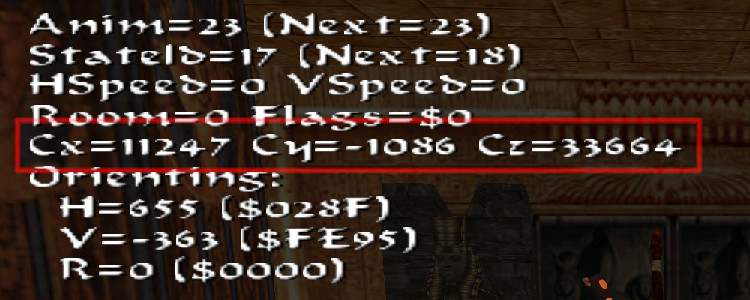
Cx=11247 Cy=-1086 Cz=33664
Got them? Great, now let’s assign these coordinate values to our particles back in Lua.
Coordinate vectors
Particle position is represented by the Vector3f data type, accessed through the field part.pos. It consists of component subfields (just like RGB colors). These components are (x, y, z), respectively for the X coordinate, the Y coordinate and the Z coordinate. Each holds a floating-point number which represent a position coordinate on a given axis:
part.pos.x -- position X coordinate
part.pos.y -- position Y coordinate
part.pos.z -- position Z coordinate
The part.pos field represents the positional coordinates of the particle in the 3D world (there are notable exceptions to this, it will be brought up when the time comes).
If you have more familiarity with the TRLE game engine, you may know that the positions of objects in the engine are represented by integers values and not float values. How can this be then, that the particles can use float numbers for positions, while most other objects in our elderly TRLE engine use integers for coordinates? It’s because the particles exist (mostly) outside of the TRLE engine, they actually reside in the plugin DLL. Therefore, they don’t have to abide by the TR engine’s restrictions. Only when necessary, these float coordinates are rounded towards the nearest integer to play well with the rest of the game engine.
Applying the position
Lara’s coordinates we got from the diagnostics are integers, since Lara exists as an object in the TRLE engine. Fortunately, integers, up to a certain range, can be sufficiently represented by floats. This range encompasses all possible position coordinates on a TRLE level map. So, let’s give it a go and try applying the written down coordinates to the particles (these are the XYZ coordinates I obtained, I will assume you have your own that will work inside of your level):
local function dustInit()
local part = createSpritePart(dustgroup) -- create a sprite particle of the "dust" group
-- change these xyz coordinates to your own
part.pos.x = 11247
part.pos.y = -1086
part.pos.z = 33664
end
If you are on the lazy side (like me) and you’re wondering if there is a shorthand version like with the createColor() function, but for coordinate vectors – you bet there is!
part.pos = createVector(11247, -1086, 33664)
Again, use whichever approach you prefer, there’s no difference between them.
Alrighty then, let’s check if we have everything we need to make the particles visible to us, at least in theory. Size – check! Lifetime – check! Color – check! Position – check! But wait a second, we forgot to specify a sprite texture we want to use for the particle, didn’t we? By default, the particle would use the sprite texture at index 0, which is the smoke sprite texture in DEFAULT_SPRITES:
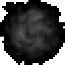
This can actually work as a passable dust cloud sprite, lucky us! But for the sake of example, let’s explicitly set it to 0, it’s good practice to do so. The particle field responsible for setting the texture is called part.spriteIndex, which can hold an integer value between 0 and 65535, corresponding to the sprite ID in the DEFAULT_SPRITES slot (sprites from MISC_SPRITES and NG CUSTOM_SPRITES slots can also be used, how exactly will be revealed in later chapters):
local function dustInit()
local part = createSpritePart(dustgroup) -- create a sprite particle of the "dust" group
-- change these coordinates to your own
part.pos.x = 11247
part.pos.y = -1086
part.pos.z = 33664
part.spriteIndex = 0 -- "smoke" sprite texture
end
Oh, would you look at that, the Copy button made its first appearance! But you’ve been carefully typing each line of code by hand this whole time, riiiiiight? ;)
I want to make note here of a rather cool implication of the part.spriteIndex property, which is that you can set different sprite texture variations for particles of the same group (even select them at random, we will discover how in the section right after this one). This was not achieveable in FLEP without using a separate OCB setting.
Looks like we’re all set, then. I’m sure you’re eager to see the particles in the game, I know I am! This is the moment we’ve all been waiting for, time to run the level and look around for any signs of particles spawning (make sure you first saved your script file, though)!
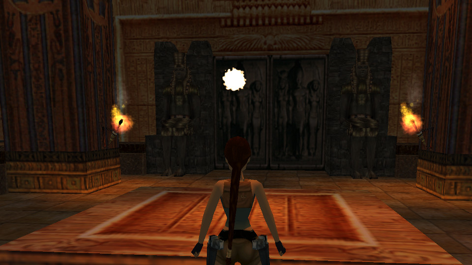
I don’t know about you, but I see something! Sadly, it appears there is only one particle being spawned. Or rather, all of the spawned particles are condensed in one, single spot. This does makes sense, though. After all, we’re giving all of the formed particles the same XYZ position, so of course they will all be appearing in the same spot.
What can we do to solve this? We’d need a way of giving each particle a randomized position within a certain range. Fortunately, the plugin API comes with a simple solution.
The plugin’s scripting API provides two built-in random number functions. These functions are randint(min, max) and randfloat(min, max). Both of these functions will give you a new random number each time you call them.
They both work in a similar way, giving a random number between the min and max values, inclusively. The distinction between them is that randint(min, max) gives you only integer numbers between min and max, while randfloat(min, max) gives any floating point number within that range. Both are immensely useful, though, and you will soon realize that they’re a must-have for nearly any effect imaginable.
Randomizing the position
How to apply the random functions? Let’s say we want to randomize all 3 position coordinates (X, Y, Z) a bit. We can create 3 temporary local variables anywhere above the piece of code that assigns coordinates to the pos vector, and to those variables we assign random numbers within a certain (min, max) range.
Let’s call our variables dx, dy, dz (or whatever name you like, doesn’t matter). We will use the randfloat() function, but since we’ll be working with numbers considerably beyond the “decimal” range, we could just as well use randint() with no noticeable difference. Say we want a randomized range of -512 to 512 on each of X, Y, Z. This should work out to make our particles spawn randomly within a box of 1024 x 1024 x 1024 world units (since -512 to 512 covers a total distance of 1024 units). We therefore do something like this:
local dx = randfloat(-512, 512)
local dy = randfloat(-512, 512)
local dz = randfloat(-512, 512)
We should now have a different random number in each of the 3 variables dx, dy, dz. Let’s add these variables to respective position coordinates of the particle:
part.spriteIndex = 0 -- "smoke" sprite texture
end
Let’s see what that looks like in game…
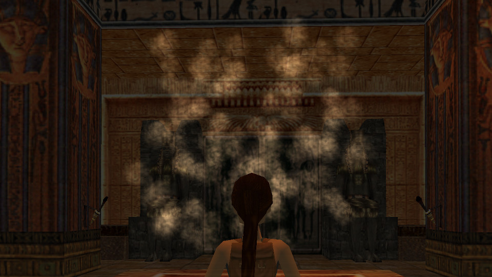
Yup, it’s looking considerably better already. It’s rough around the edges, but it could even pass as a half-decent volumetric effect as it stands now… okay, who am I kidding, it’s rather ugly. We can surely make several more improvements to give it some polish, though!
Randomizing other fields
Since we are now aware of this possibility, let’s just use the random numbers wherever. In real life, dust clouds are hardly the same size all across. Let’s recreate that in our dust particles and give them some size variety. We will use the randint() function for it this time, since size requires integer values:
I chose a random size between 150 and 300, but you can go with something different. One thing I want to emphasize is the line right below. Here, we have written:
part.sizeEnd = part.sizeStart
instead of
part.sizeEnd = randint(150, 300)
Do you know why? I mentioned that the random number function gives you a new number each time you call it. Since in this case it would be called a second time for part.sizeEnd, you’d most likely get a different value of part.sizeEnd than part.sizeStart. Which is not a bad thing by any means, but if we prefer to keep the particle sizes consistent, we have to copy the value we got for part.sizeStart. Note that this could just as well be solved with a temporary local variable, like so:
One more thing that we can do with size to make the dust effect look more appealing is to make the particles expand a bit over time (this will simulate the dust gradually dispersing through the air). This can be easily done by giving part.sizeEnd a multiplied value of part.sizeStart (perhaps 2 or 3 times bigger). If you are not sure what to do, here is the answer:
part.sizeStart = randint(150, 300)
part.sizeEnd = part.sizeStart * 3 -- make dust slowly expand over time
How about we also randomize our dust color a bit while we’re at it? Maybe something like this:
part.spriteIndex = 0 -- "smoke" sprite texture
end
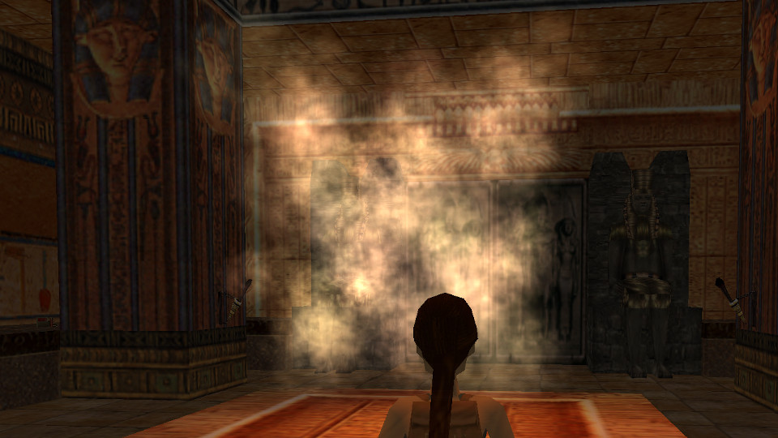
Giving random variation to the particle properties gives a more organic element to the effect. Hence why I consider random number functions to be a necessity when working with particles (rather than setting hard, specific values).
The effect is getting better and better, but you probably already noticed how sharply the particles pop in and out of existence – it’s quite jarring. Also, the expanding sprites overlap each other, which paired with the additive blending makes them a tad too bright for our dust effect. Can we do something about that? Certainly!
Time to introduce two new fields: part.fadeIn and part.fadeOut. Both store an integer between 0 and 32767.
The part.fadeIn parameter tells us how many in-game frames the particle (since its creation) will fade from black (0, 0, 0) to its current, blended color. Because black is completely invisible with additive transparency (used by default), it effectively makes the particle smoothly materialize into existence.
The part.fadeOut parameter is the counterpart of part.fadeIn – it tells us how many frames the particle will take, approaching the end of its life, to fade from its current color to pure black (0, 0, 0), thus vanishing into thin air.
Both of these parameters serve to smoothen out the transitions for a particle being spawned and a particle reaching its end, respectively. Let’s try setting a value of 30 frames (1 second) to both parameters. This way the particles should fade in for 30 frames, remain at their brightest color for 60 more frames, and then fade out for the final 30, for a total of 120 frames (the value of part.lifeSpan). Of course, the fadeIn and fadeOut values don’t need to be equal, but the one rule to respect is that their sum must be smaller or equal to the lifeSpan, to avoid rendering artefacts ((fadeIn + fadeOut) ≤ lifeSpan).
Let’s apply the fade-in and fade-out:
local function dustInit()
local part = createSpritePart(dustgroup) -- create a sprite particle of the "dust" group
part.lifeSpan = 30 * 4 -- 30 frames * 4 = 4 seconds
part.sizeStart = randint(150, 300)
part.sizeEnd = part.sizeStart * 3 -- make dust slowly expand over time
There is something still bothering me about the particles, they seem quite… static? Dust usually drifts in some direction, especially if there is an air current. Well, time for… particle velocity!
Velocity, accessed through the part.vel field, is another Vector3f (coordinate vector) data field. It describes how much the particle will travel on each axis (X, Y, Z) on each frame. And just like position, it has x, y, z subfields. On each game frame, the velocity vector part.vel is added to the position vector part.pos, resulting in motion over time.
Let’s give the particles randomized velocity components on each axis:
local function dustInit()
local part = createSpritePart(dustgroup) -- create a sprite particle of the "dust" group
part.lifeSpan = 30 * 4 -- 30 frames * 4 = 4 seconds
part.sizeStart = randint(150, 300)
part.sizeEnd = part.sizeStart * 3 -- make dust slowly expand over time
part.spriteIndex = 0 -- "smoke" sprite texture
part.fadeIn = 30 -- fade in for 1 second
part.fadeOut = 30 -- fade out for 1 second
end
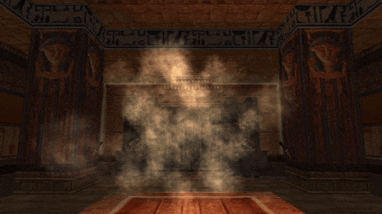
I picked a random range of -5 to 5, but you can have a different one of course. It also doesn’t need to be symmetric either, you can make it more biased in some direction. For example:
Yeah, our dust effect is not that bad already, but it’s still missing something… oh, got it! Ever notice how the smoke/fire sprites in the game slowly rotate clockwise or counter-clockwise? Perhaps we can do the same for our “dust” sprites.
The part.rot particle field describes the angle of the particle’s rotation, while part.rotVel the rotation speed. At 0, it means zero rotation, the particle texture should appear in the same orientation as in the sprite slot (DEFAULT_SPRITES). But what about other angles? Is the rotation expressed as degrees?
Relentless radians
No… it is with great pain that I have to inform you – it is not in degrees. It’s… in radians…
“*groans*”
“…why???”
“Wait, what are radians?”
I know, I know, this is a controversial decision. Those familiar enough with mathematics know what radians are. If you don’t recall, I’ll get you up to speed. They are an alternative way of measuring and expressing angles (apart from the more widely known degrees) and are often used in mathematics and engineering. But they are also known for being less intuitive than degrees, at least at first.
When using radians, everything is based around the number π (pi). You know, 3.14159265…
An angle of 180 degrees is exactly π radians. From this, we infer that a 90 degree angle is π/2 (half of pi) and a full 360 degree angle is 2π (two times pi). With this measurement system, we can express any angle that we could with degrees, it’s only as if the “unit” for expressing these angles has changed.
The pressing question you may have is why choose radians over the more familiar and easy to understand degrees? There is a simple reason – computers handle radians better. In fact they were designed to work with radians instead of degrees. So while degrees seem better for us, radians are better for computers. This isn’t to say that you can’t make computers understand degrees as well, it’s just that internally they prefer radians for performing calculations relating to angles. Specifically, in the case of computing values for trigonometric functions, like sin() or cos(). And we certainly will be coming into contact with these functions more than once during our journey with particles.
All this is to say that part.rot uses radians for angles as well. But don’t give up if you hate radians, I hate them too! This is why the API provides functions for converting between degrees and radians, both ways. There’s the degToRad() function for going from degrees to radians, and radToDeg() function for going from radians back to degrees. Whenever radians give you a hard time, you may use these conversion functions as a communication tool between you and the computer when it needs radians, but you only know how to use degrees. Just remember to use them the right way (e.g. don’t use degToRad() on a value that’s already in radians, since the computer is stupid and can’t tell the difference, it sees a number and runs with it).
À propos, the plugin API also provides a few built-in constants for approximated values of pi and its multiples:
PI -- pi itself
PI_HALF -- 1/2 of pi
PI_THIRD -- 1/3 of pi
PI_QUART -- 1/4 of pi
PI_TWO -- 2 * pi
These constants must be written in ALL_CAPS to be recognized, meaning that something like Pi_Half will confuse Lua, the only correct version is PI_HALF. When Lua encounters such a constant, it gets replaced with the value it represents during runtime. This way, you can conveniently use pi or its fractions and multiples without having to memorize the digits or store them in an extra variable.
Anyway, to get back to the topic of particle rotations…
Before the rant about radians, I said that part.rot expresses the rotation of the sprite texture for the particle. What about part.rotVel? It’s an abbreviation for rotation velocity (i.e. angular velocity), or in other words, by how much the rotation angle is changed on each frame. This allows particles to spin around, clockwise or anti-clockwise.
One more thing to note about part.rot is that it will wrap around when going beyond 2 pi radians, or 360 degrees, coming back to 0 again (which should not surprise you if you know your angle maths). The same goes for part.rotVel, by the way, although I don’t see why you would ever want to use such huge spinning velocities in the first place.
For the sake of being easier to follow, let’s use the conversion function degToRad(), so we can specify degree values and translate them to radian values needed for part.rot and part.rotVel.
We want the particle to start out with a random initial rotation. How can we go about this? We can say that we first want a random amount of degrees between 0 and 359 (360 would be the same as 0, so we go one less). We can use randint() like so:
local degrees = randint(0, 359)
Now, let’s call the degToRad() function with degrees as the argument and assign the result to part.rot:
local degrees = randint(0, 359)
part.rot = degToRad(degrees)
And we’re done! If we run the level, we should observe that each particle receives a different rotation (though it may be a bit hard to notice).
The part.rotVel field
Let’s move to part.rotVel now. We want the particle to spin slightly, but not too fast. Of course, there will be differing opinions for what is deemed “too fast”, but I will suggest a rotation speed of 3 degrees per frame. Better yet – let’s make it a random value between 2 and 4 degrees. We’ll use randfloat() this time, since the range is on a smaller scale, so we will benefit from the in-between float numbers:
local rotspeed = randfloat(2, 4)
We use degToRad() again to assign the random amount of degrees to rotVel:
local rotspeed = randfloat(2, 4)
part.rotVel = degToRad(rotspeed)
After testing it in the level, it seems to be working. All the particles are spinning in the same clockwise direction, whereas we would prefer some of them to spin anti-clockwise instead, replicating what TR4 smoke particles did. How can this be implemented?
A simple (somewhat naive) idea is to extend the minimum range specified in randfloat(), including both negative and positive values:
local rotspeed = randfloat(-4, 4)
This will indeed result in some particles spinning clockwise and others anti-clockwise. Sadly, some will also have no rotation speed, or close to none. Given the range from -4 to 4, some of the generated values will inevitably end up near 0.
With some ingenuity, you should be able to solve this problem yourself. It involves generating a random integer between 0 and 1 and using an if conditional statement to check if we got 0 or 1 (basically simulating a coin flip, “heads” or “tails”). If we ended up with 0 (e.g. “heads”) we assign the value of randfloat(2, 4) to rotspeed directly, otherwise (“tails”), we negate the random value first and then assign it to rotspeed. We have not used conditional statements yet, but here is a quick example of what this could look like:
local rotspeed
if randint(0, 1) == 0 then -- if we got "heads" in the coin flip
rotspeed = randfloat(2, 4) -- don't negate the random value
else -- otherwise
rotspeed = -randfloat(2, 4) -- negate the random value
end
This will indeed work as expected, giving us an equal chance of a clockwise or counter-clockwise rotation. However, because this pattern of flipping the sign 50/50 is so commonly needed, the plugin offers a faster way to do it, with less code.
Using randomNegate()
I present yet another nifty function – randomNegate() which takes a value and does this 50/50 coin flip for you, returning either the value you gave it, or its negative, with an equal chance for either outcome. Just the solution we need for what we are trying to do here!
To achieve this in just one line, we can wrap our randfloat(2, 4) call inside a randomNegate() call, like so:
-- generate a random value between 2 and 4, negate it with 50% likelyhood
local rotspeed = randomNegate(randfloat(2, 4))
Perhaps this mechanism of wrapping function calls is not clear to everyone, so I will break it down. First, the randfloat() function gets called and returns a random value in the given range. Then immediately, the result gets passed as an argument itself to randomNegate(), which does its own logic to give the ultimate value assigned to rotspeed. If you still can’t wrap your head around this (ha, see what I did there?), I will write out the equivalent code, but separated into two lines, representing each step.
local rotspeed = randfloat(2, 4) -- generate a random value between 2 and 4, assign this to rotspeed
rotspeed = randomNegate(rotspeed) -- take the value of rotspeed, negate it with 50% likelyhood and assign it back to rotspeed, overwriting it
This achieves the same thing as the one-liner, it’s just split into individual steps. If you do not understand the concept of wrapping function calls, or you don’t feel comfortable using it, it’s totally fine to write your code the second way. The code should make sense to you, first and foremost.
Let’s wrap it all up (fine, I’ll stop with the puns…) with the whole init function again:
local function dustInit()
local part = createSpritePart(dustgroup) -- create a sprite particle of the "dust" group
part.lifeSpan = 30 * 4 -- 30 frames * 4 = 4 seconds
part.sizeStart = randint(150, 300)
part.sizeEnd = part.sizeStart * 3 -- make dust slowly expand over time
part.spriteIndex = 0 -- "smoke" sprite texture
part.fadeIn = 30 -- fade in for 1 second
part.fadeOut = 30 -- fade out for 1 second
-- randomize rot and rotVel
local degrees = randint(0, 359)
part.rot = degToRad(degrees)
-- generate a random float between 2 and 4, negate it half of the time
local rotspeed = randomNegate(randfloat(2, 4))
part.rotVel = degToRad(rotspeed)
end
And we can check out what that looks like in-game.
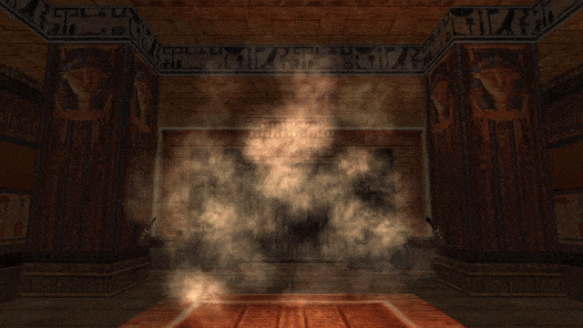
Seems like it’s working as intended, awesome!
We’ve managed to cover some basics of particle scripting, specifically writing init functions. Great job, you should be proud of yourself for persevering and reaching this point!
We may have reached the end of this document, but this is not the end of Chapter 1 yet! I merely divided the chapter into two halves, making it easier to read and digest. Closing the topic of particle rotations seemed like a good moment to take a well-deserved break. The remaining second half of the chapter has equally useful contents, so if you like what you’ve read so far, don’t skip out on it!
As I said in the beginning, this first chapter was going to be very long. I did my best to explain scripting in the most comprehensible and accessible way I could, while keeping the reader engaged. You have witnessed for yourself that the plugin API is very feature-dense and there are lots of fields and functions to keep track of. Yet, we’ve barely scratched the surface of what’s to come. We have not even dealt with particle update functions (and their possibilities are even crazier than those of init functions, trust me)!
I truly hope you were able to grasp the fundamentals of particle scripting after working through the examples and got something out of it. I am also hoping that you were able to recognize just how much more powerful Lua scripting is, when compared with the FLEP smoke emitter patches. It enables you to customize nearly every imaginable aspect of how the particle effect should work and look like, down to the smallest level of detail. I strongly encourage you to do some more experimenting with the capabilities of the particles, now that you have the basics down. Create more particle groups and try fiddling around with different sprite textures, colors, sizes, setting different velocities, etc.
If you’re up for a challenge, you may try to replicate the effects from the screenshots below. They all use the standard DEFAULT_SPRITES textures and can be achieved with everything contained in this chapter. Have fun!
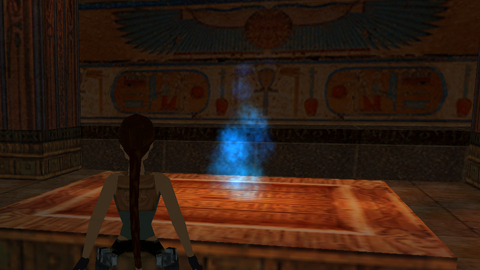
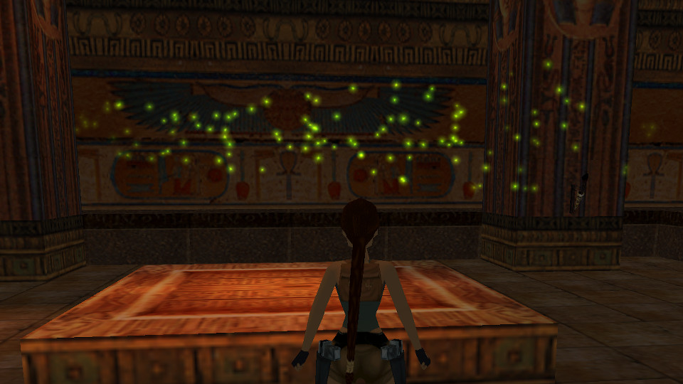
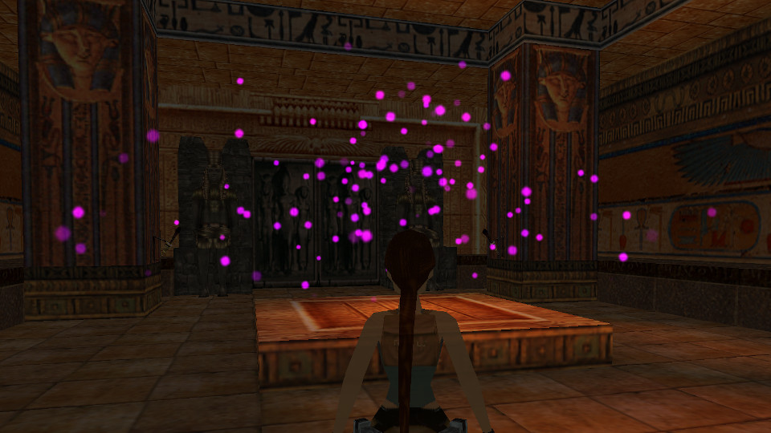
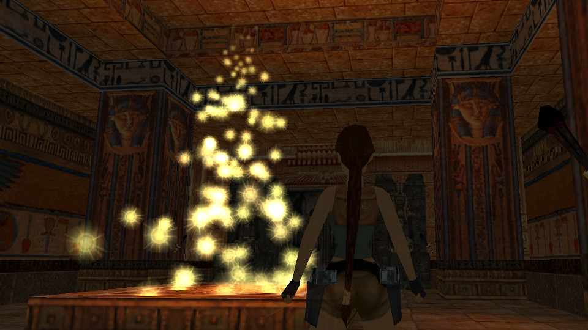
Hope to see you again in the other half of the chapter, where we discuss some remaining sprite particle properties and a few neat tricks you can still do with init functions by themselves. Until next time!